Getting started with Keycloak
This step-by-step walk-through will show you how to get your Keycloak server set up to work with the minimal example. For this tutorial, I am running Keycloak locally with Docker.
You will need:
- Docker installed (or an existing Keycloak server)
- Python 3.8+ installed
- Python packages
armasecanduvicorninstalled
Start your Keycloak server
If you want to try the example locally without an existing Keycloak server, you can start a new one using Docker with the following command:
docker run -p 8080:8080 -e KEYCLOAK_ADMIN="admin" -e KEYCLOAK_ADMIN_PASSWORD="admin" keycloak/keycloak:18.0.0 start-dev
This will start a server who's admin UI is available at localhost:8080.
Open a browser and load the address localhost:8080. Then, click on the "Administration Console" to
log in.
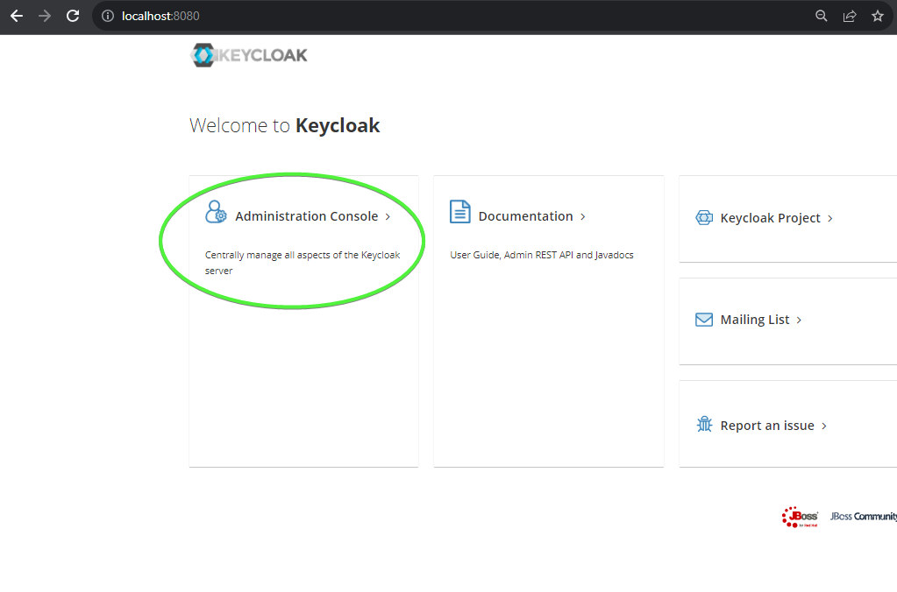 Log-in to admin console
The sign-in credentials for the admin account are:
| Field | Value |
|---|---|
| Username | admin |
| Password | admin |
After you log in, you will load the "Master" realm.
Set up your "Master" realm
First, we need to change the lifespan for tokens. By default they expire after 1 minute, but that's not so friendly for a tutorial, so we will lengthen the lifespan to 5 minutes.
Go to the "Tokens" tab of your "Master" realm and set the "Access Token Lifespan" to 5 minutes.
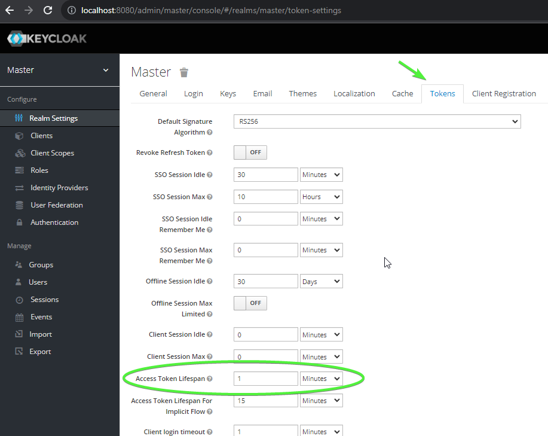 Ream settings
Click "Save" at the bottom after you change the value. All of the rest of the settings can be left as they are.
Set up a client
We will need a client that is configured with our permissions. To do this, navigate to the "Clients" tab in the nav bar and click the "Create" button:
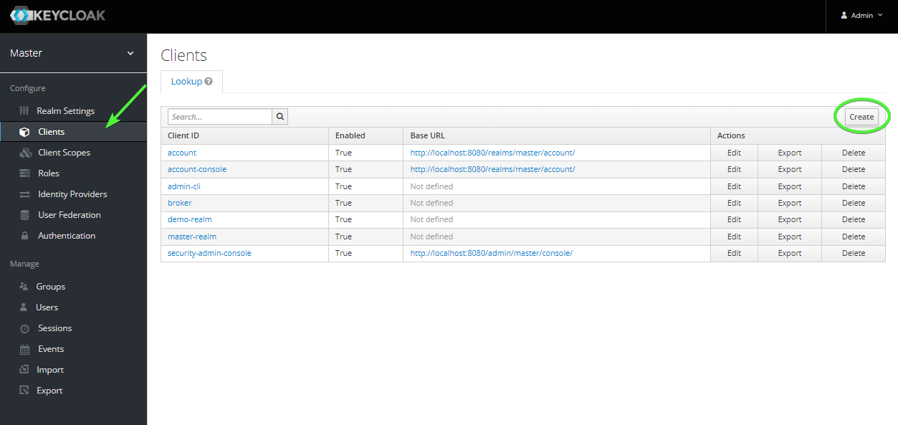 Clients
For this tutorial, we will use the name "armasec_tutorial". Click "Save" to create the new client.
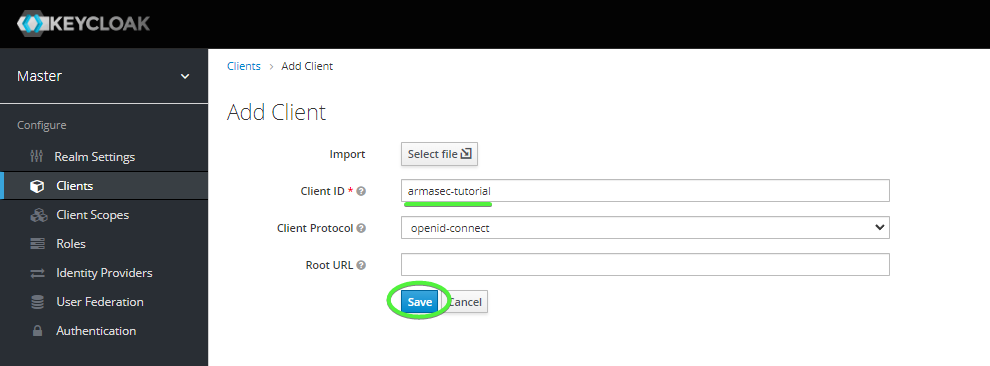 Create client
Now we need to set the following values for the new client:
| Field | Value |
|---|---|
| Access Type | Confidential |
| Service Accounts Enabled | ON |
| Valid Redirect URIs | * |
The service account produce a token using the client secret over an API request to Keycloak.
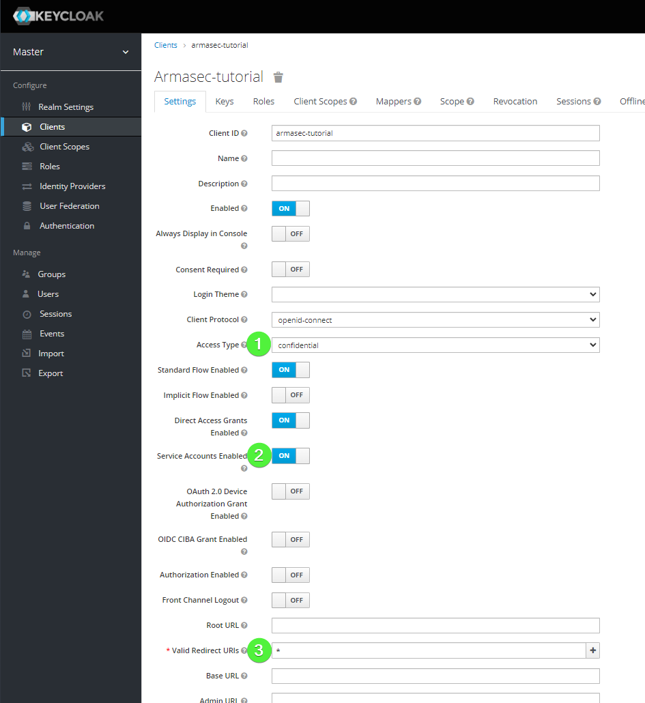 Client settings
Next, we need to save the "Client Secret" for later when we request a token. Navigate to the "Credentials" tab and copy the value found in the "Secret" field.
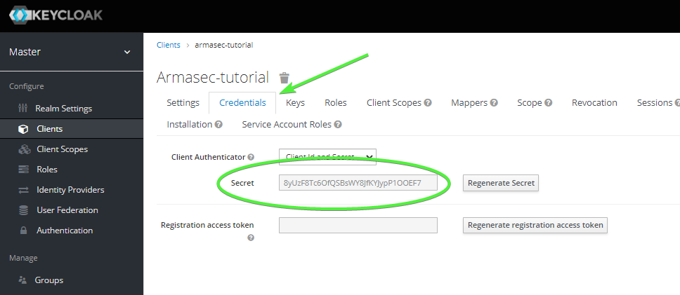 Secrets
Next, we need to create the "Roles" that Armasec uses for the "permissions" claim inside the tokens. Navigate to the "Roles" tab for the client and click the "Add Role" button.
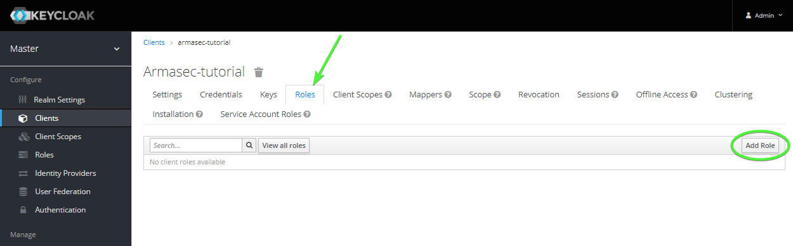 Add role
Fill the "Role Name" field with "read:stuff". There's no need to add a description at this time. Click the "Save" button to add the role to the client.
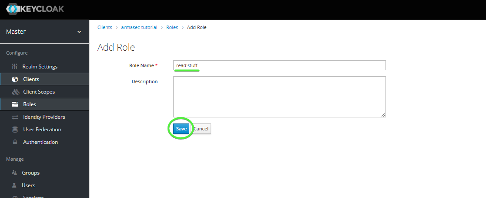 Save role
Finally, we need to set up an "Audience" mapper to set the audience claim in the token that our example app will check for.
Navigate back to the "armasec_tutorial" client and open the "Mappers" tab. Click the "Create" button to add a new mapper.
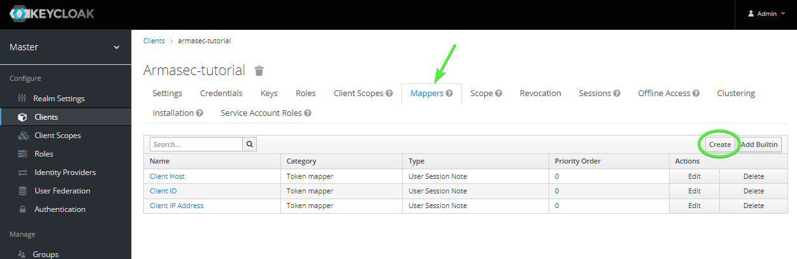 Mappers
Create a new mapper with the following settings:
| Field | Value |
|---|---|
| Name | audience |
| Mapper Type | Audience |
| Included Custom Audience | http://keycloak.local |
| Add to ID token | ON |
Click "Save" to create the new mapper.
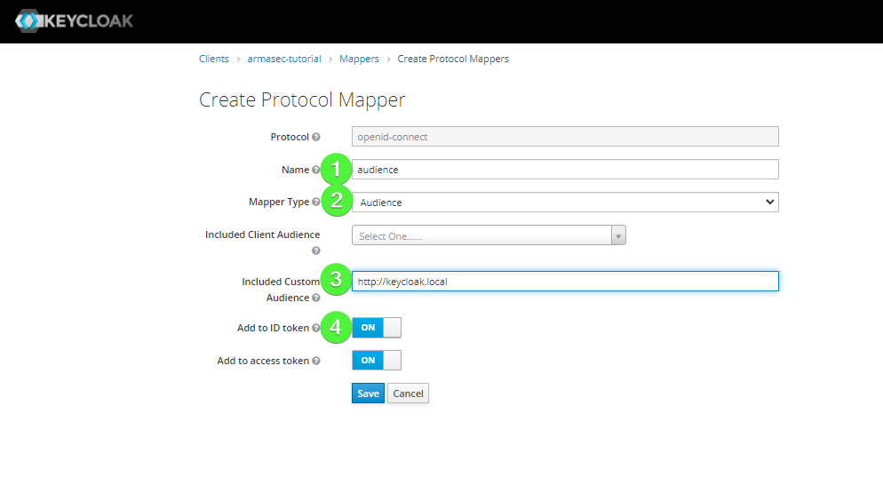 Audience mapper
Now, for the purposes of this tutorial, we will be getting a token via a request with a "Service Account Role". We need to add the role we created above to the "Service Account Role" so that the token issued later includes the needed permissions.
Navigate to the "Service Account Roles" tab. Then, select "armasec_tutorial" for the "Client Roles" field. Select the "read:stuff" role and add it with the "Add selected >>" button.
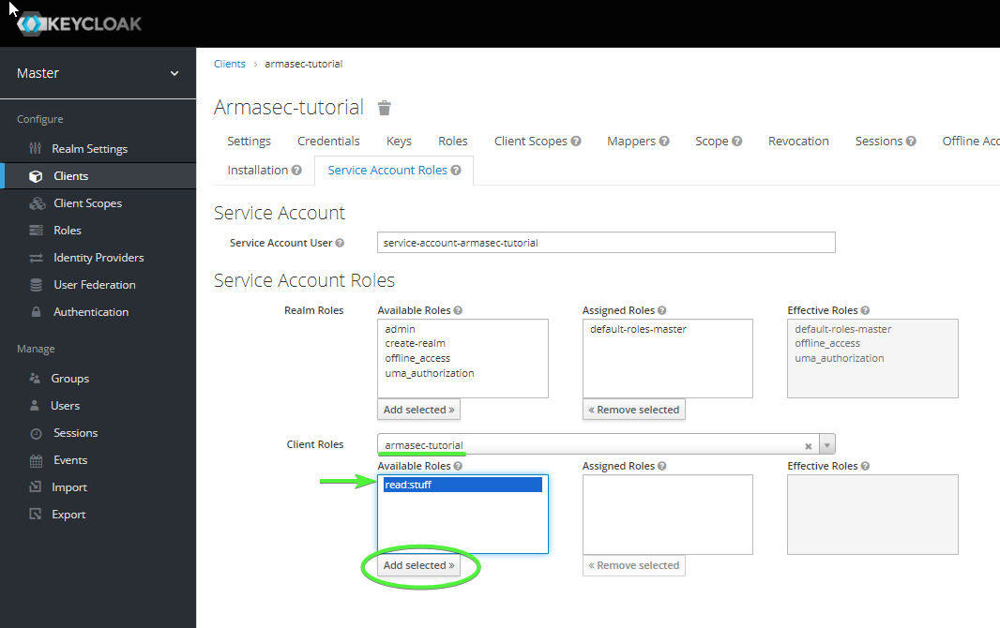 Add role
Now your client should be all set up and ready to go.
Start up the example app
Note in this example that the use_https flag must be set to false to allow a local server using
unsecured HTTP.
Also not that we need to add a payload_claim_mapping because Keycloak does not provide
a permissions claim at the top level. This mapping copies the roles found at
resource_access.armasec_tutorial.roles to a top-level attribute of the token payload
called permissions.
Copy the example.py app to a local source file called "example.py".
Start it up with uvicorn (running in the background):
Once it is up and running, hit <ctrl-z> and type the command bg to put the uvicorn
process into the background. You should make sure to kill the process when you complete
the tutorial.
Get the test token
We will use curl to get an example token to test out our route's security. You will
need to replace $CLIENT_SECRET with the secret variable we noted earlier.
Alternatively, you can set a shell variable with this value and use the command
directly.
curl -d "client_id=armasec_tutorial&client_secret=$CLIENT_SECRET&grant_type=client_credentials" -X POST "http://localhost:8080/realms/master/protocol/openid-connect/token"
You should see a JSON blob printed out that includes an access_token attribute along
with other metadata about the token.
Try it out
Open a browser to localhost:8000/docs
 Swagger
Swagger
This will show you the auto-generated swagger docs for the example API app. Click on the
Authorize button to add the token you copied to the clipboard in the header of requests to the
API.
 Authorize
Authorize
First, type "Bearer " followed by pasting the token from the clipboard into the form and click the
Authorize button in the dialog, click Close to dismiss the dialog. Now, all subsequent calls
to the API will include a header that looks like:
Now, expand the "GET" REST operation on the /stuff endpoint and click Try it out.
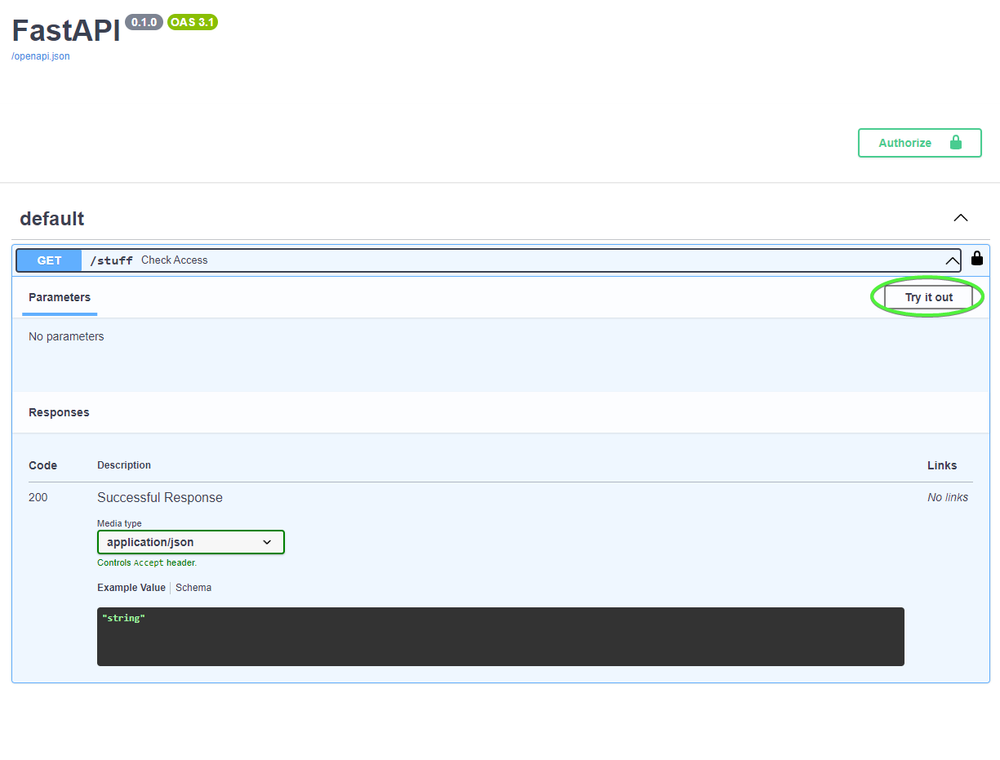 Try it out
Finally, click Execute to issue the request to the API.
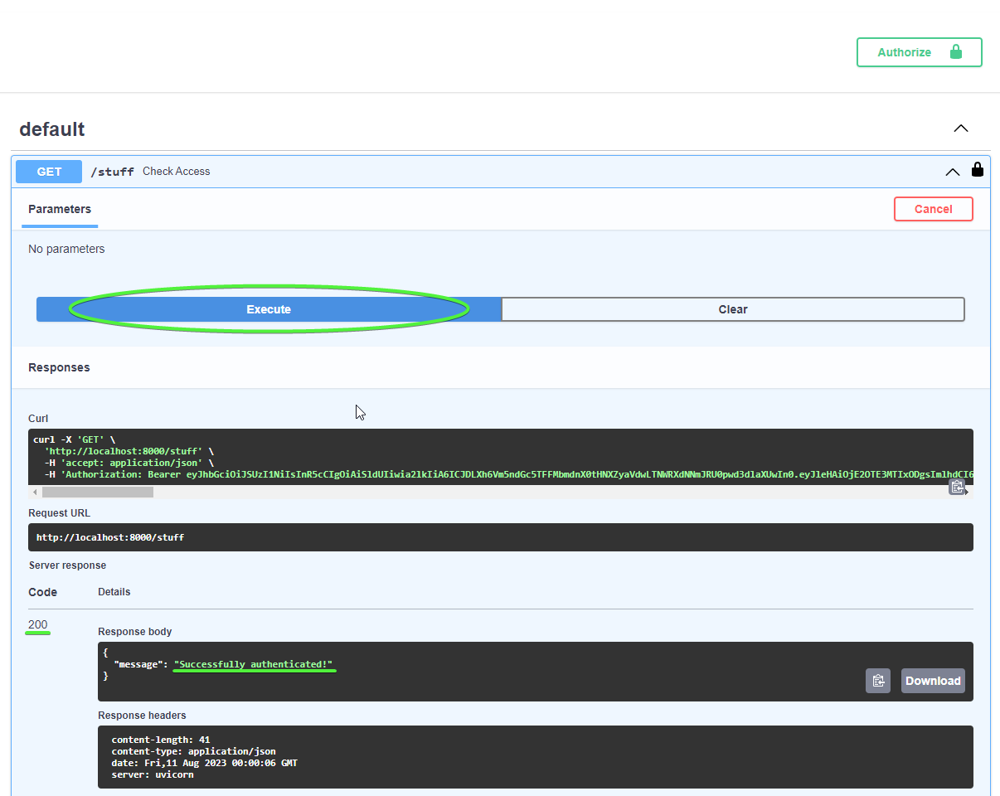 Execute
You should see a response that includes a 200 status code and a response body that includes:
Congratulations! You are now using Armasec and Auth0 to authorize requests to your API.
Tinker
Now, there are a few things you can do to check out how things work. Try the following things:
- Remove the "read:stuff" role from the Service Account and try another request
- Try a request without being authorized in swagger
- Try making requests using
curlor thehttpxlibrary in IPython
Send feedback
If the above tutorial didn't work as expected, a step needs better clarification, or you have some questions about it, please create an issue on Armasec's GitHub's issues.